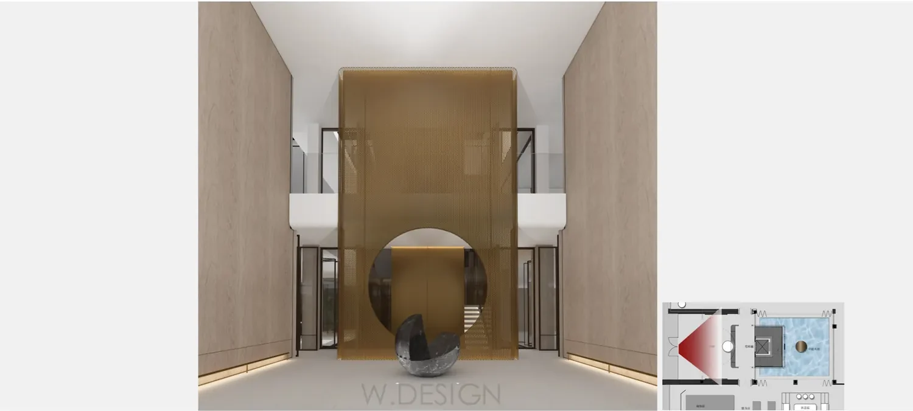

Portfolio / Villa FF&E
Villa FF&E and presentation support.
Selected residential presentation visuals showing how furniture, finishes and decorative elements work together across a villa interior.

Purpose of the presentation
FF&E visuals help a design team review scale, spacing, finish relationships and the overall character of a room before selections are finalized. The published image emphasizes the relationship between architectural surfaces, loose furniture and decorative lighting rather than documenting a complete procurement package.
Preparing a comparable brief
Begin with current plans and elevations, key dimensions, furniture or product references, material boards and a list of the rooms and views to be presented. Mark confirmed selections separately from placeholders so the review team understands what can still change. Identifying project information has been removed for confidentiality.
See our interior rendering service and guidance for interior design studios.